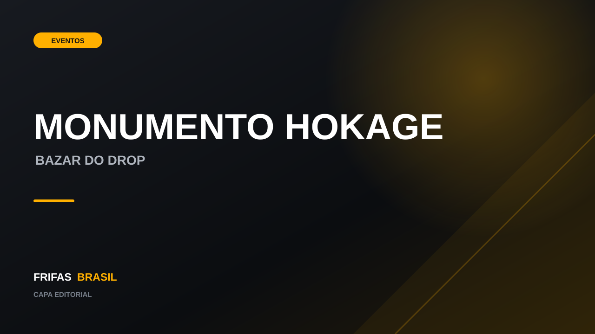
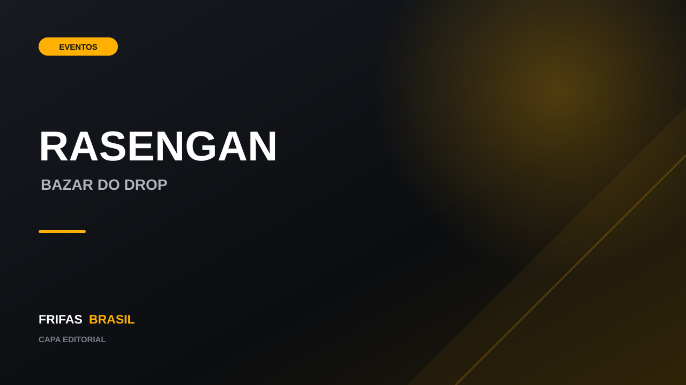
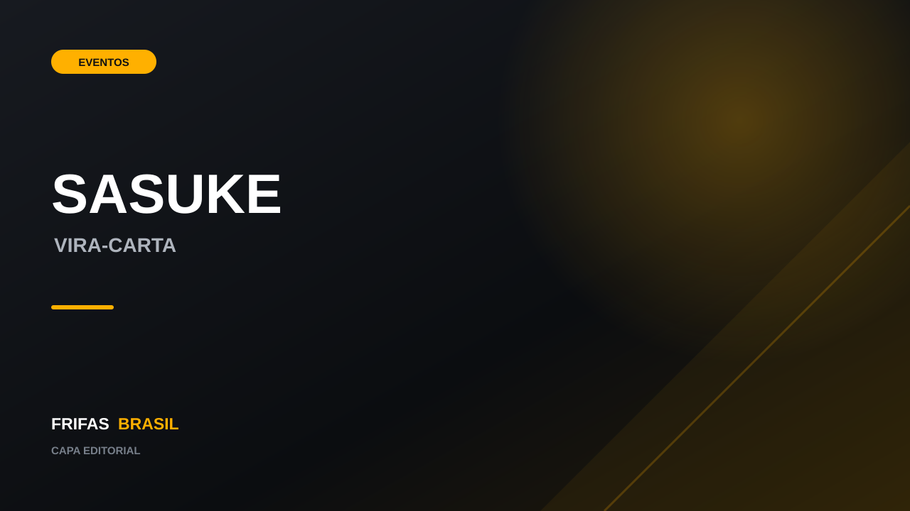
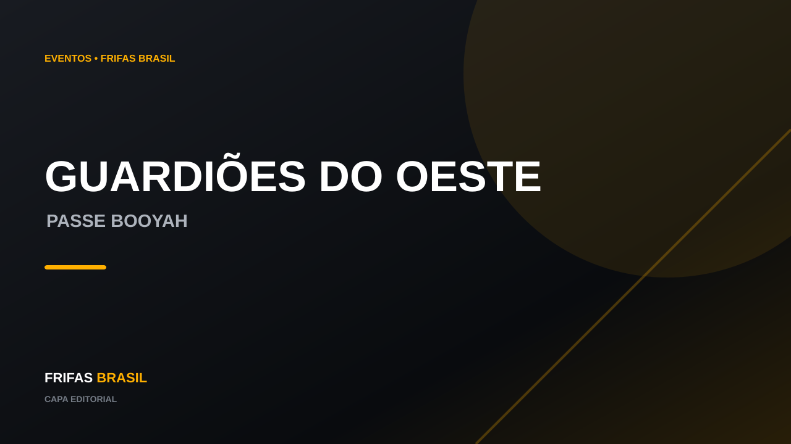
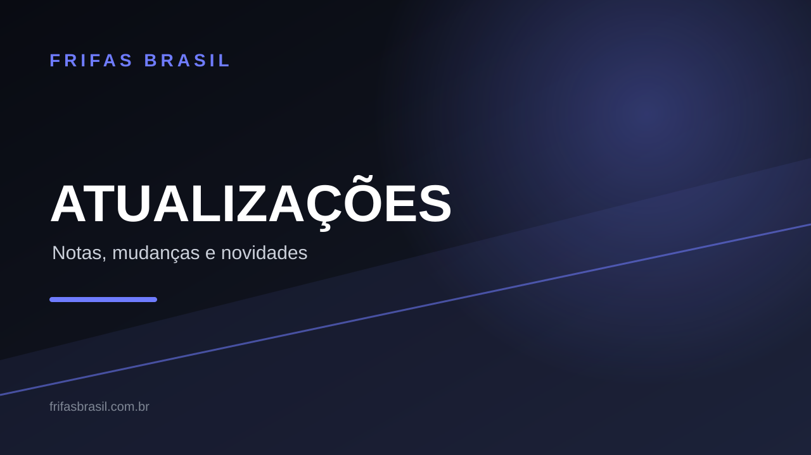
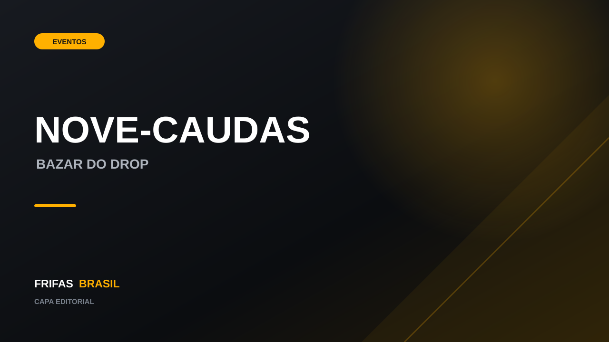
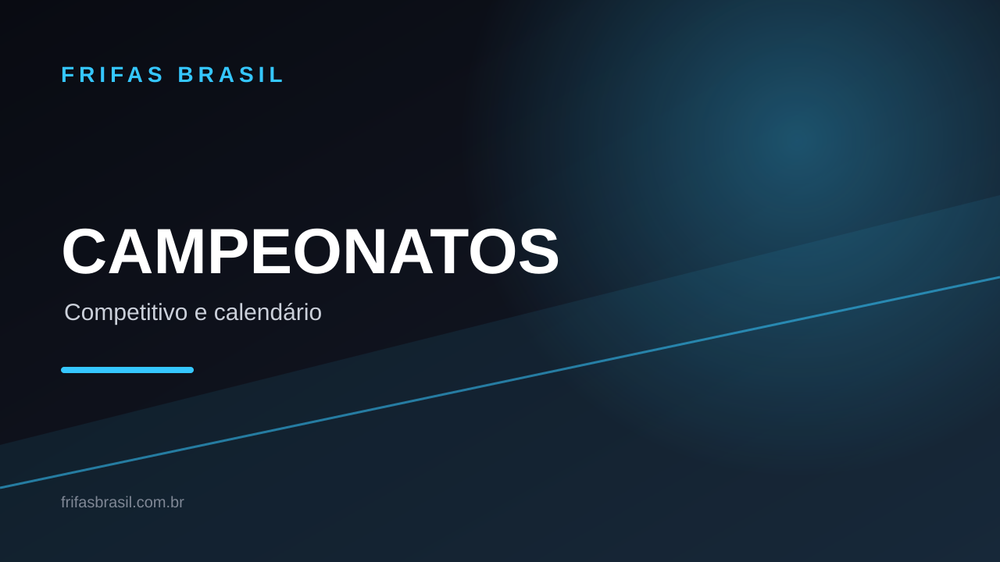
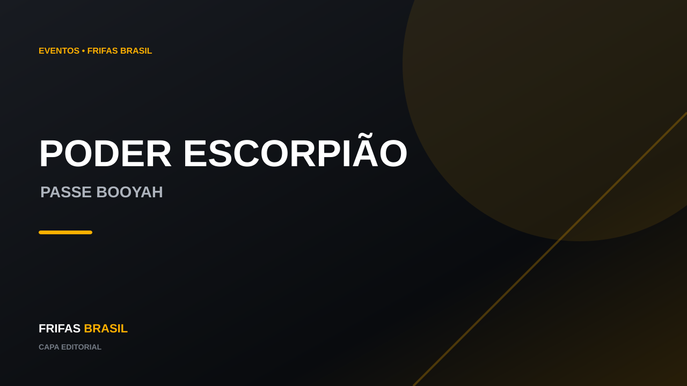

Notícias
Novidades, eventos, atualizações e acontecimentos do Free Fire organizados em um só lugar.
Mais recentes
Do conteúdo mais novo para o mais antigo.

Parede de Gel - Monumento Hokage chega ao Bazar do Drop
Nova rotação reportada para o servidor brasileiro fica disponível de 7 a 15 de outubro.
Ler matéria →Free Fire tem 5 recompensas de Codiguin em outubro
Lista divulgada via programa FFCP reúne cinco recompensas previstas para outubro.
Ler matéria →
Loja de outubro recebe Conjunto Zephyr, Senhor dos Ventos
Rotação reportada para o Brasil começou em 1º de outubro e tem previsão até 30 de outubro.
Ler matéria →O Oculto pode ser o evento de Halloween da OB55
Advance Server aponta conteúdo de terror para outubro, mas Garena ainda não confirmou a chegada ao Brasil.
Ler matéria →
Bazar do Drop recebe Rasengan em nova rotação
Duas fontes especializadas apontam a seleção no servidor brasileiro de 3 a 11 de outubro.
Ler matéria →Trilha Turbo com Rock Lee e itens de NARUTO
Rotação temática foi identificada em dados do jogo e é tratada como informação reportada.
Ler matéria →
Vira-Carta com Conjunto Sasuke segue ativo em outubro
Calendário especializado aponta a rotação até 15 de outubro, com Groza - Sasuke e Conjunto Bermuda Angelical.
Ler matéria →Virada Suprema recebe Punho - Raio do Ninjutsu
Rotação reportada para o servidor brasileiro começa em 2 de outubro; a matéria diferencia o que foi reportado do que foi anunciado oficialmente.
Ler matéria →
Passe Booyah: Guardiões do Oeste
Temporada de outubro traz o tema do Velho Oeste e progressão Premium.
Ler matéria →
M7, Skorp, RPK e Harpia chegam hoje ao Free Fire
A Garena confirmou as quatro armas para 1º de outubro; veja imagens oficiais, características, preços e onde encontrá-las.
Ler matéria →Airdrops viram meteoros e Máquinas de Vendas ganham descontos
A etapa de 1º de outubro adiciona dois eventos aleatórios e ajustes nos airdrops do Battle Royale.
Ler matéria →Loja Prime de outubro traz Conjunto Cobra: Modo Fúria
Seleção reportada para outubro reúne seis itens; confira os nomes e os preços divulgados.
Ler matéria →Misha perde efeito no cavalo; montaria volta a 500 HP
Mudança reportada para 1º de outubro altera a interação da habilidade da Misha com a montaria.
Ler matéria →
Bazar do Drop com Nove-Caudas segue disponível
A rotação brasileira começou em 30 de setembro e tem término reportado para 13 de outubro.
Ler matéria →Invasão da Nove-Caudas está de volta ao Free Fire
O retorno traz Hinata Hyuga, Academia Ninja, novas mecânicas no Battle Royale e recompensas.
Ler matéria →Free Fire prevê novos controles parentais no Brasil
Garena prevê aferição de idade, limites de tempo, recarga semanal e restrições de comunicação.
Ler matéria →
FFWS Global Finals 2026 começa em Bangkok
A Garena confirmou 24 equipes e quatro fins de semana de competição.
Ler matéria →
Passe Booyah: Poder do Escorpião
A temporada de novembro aparece catalogada por fonte especializada.
Ler matéria →Servidor Avançado OB56 é esperado para novembro
A janela ainda é previsão; a Garena não confirmou uma data oficial.
Ler matéria →Free Fire completa 9 anos hoje
O jogo lançado em 2017 chega aos nove anos; relembre a celebração oficial preparada pela Garena em 2026.
Ler matéria →